Today I'm going to share with you my experience with meditation and mindfulness.
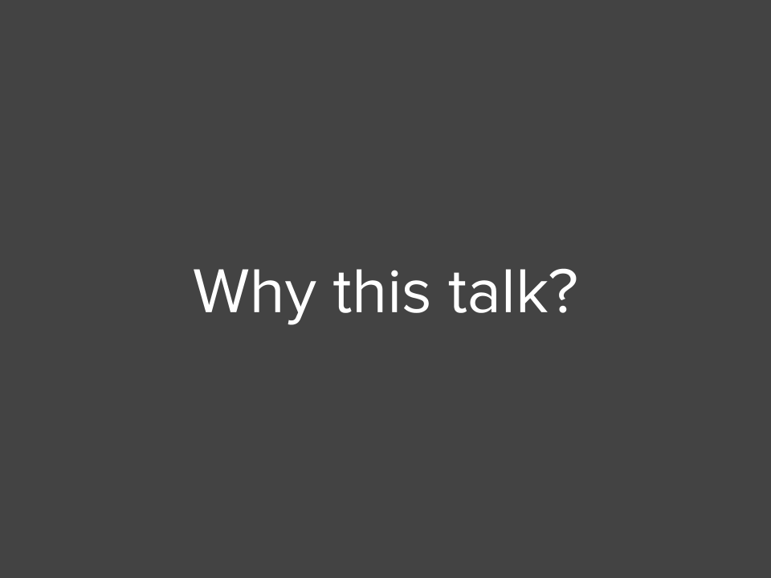I know that this is a different talk from all the others, and some of you might wonder if it even belongs to a design and engineering focused conference like ng-conf. I think it does. What motivated me was that I wished someone had done this talk for me in the past. When I saw the possibility of helping in this way to at least one person in this room or online, it was hard to not seize the opportunity.
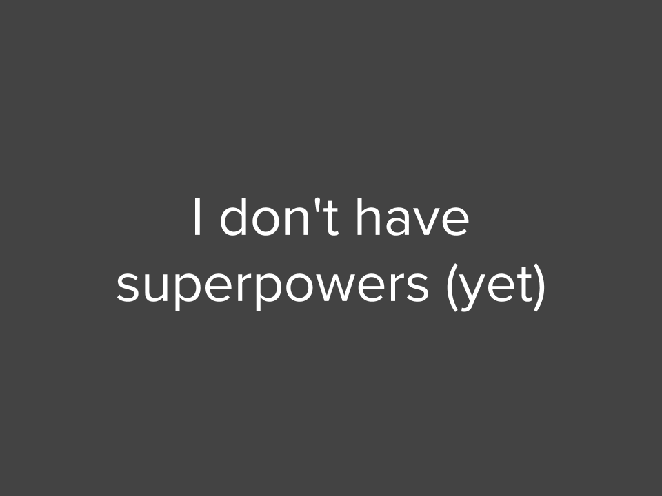Even though the title of this talk refers to superpowers, and power management, I don't claim to have any superpowers or great ability to manage my power yet. But I'm working on it.
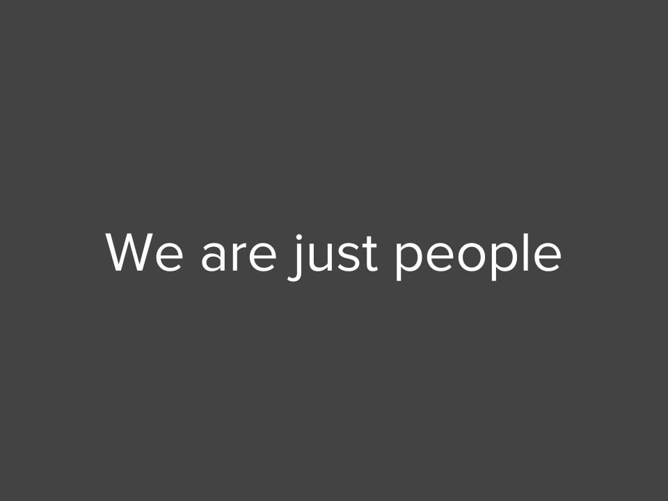When I or others on the Angular team talk to many of you, we sense that you give us more credit than what we deserve. Working on Angular 2 has been for us a great opportunity to reflect upon where we are and how we got here not only as Angular the code base or APIs, but also as Angular the community, the team and individuals on the team. What we often discover is that we just happened to have the right intentions, were at the right place, at the right time, and worked hard to make these intentions materialize into something wonderful.
There is no magic to that. No superpowers. But Angular has superpowers, or at least the theme we picked for Angular makes references to superpowers. That's because we want Angular to enable everyone to be more productive when building web apps, as if they had superpowers.
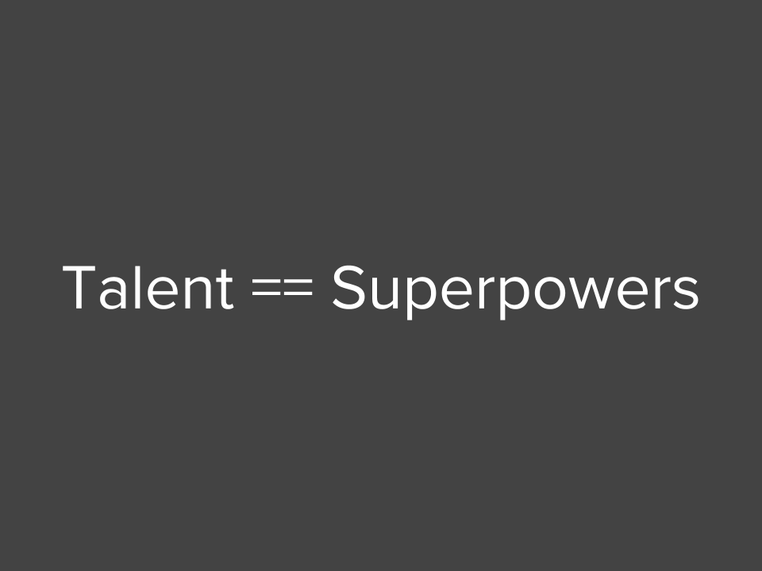Often I read or hear about someone being described as talented, which I think is the same as having superpowers. People often say that successful individuals were born with a talent. I think this is not correct.
Recently I read a great book called Nurtured by Love, where an influential Japanese musician and pedagogue Shinichi Suzuki, goes into great lengths of describing empirical evidence that supports the claim that talent is not inborn. He explains that talent is made and that once a person acquires a particular talent it is easier for that person to acquire other talents.
I never really thought much about this, but then when I looked around me and looked up biographies of people I admire, there was something that all of them had in common. They worked hard on improving themselves in whatever field they were passionate about.
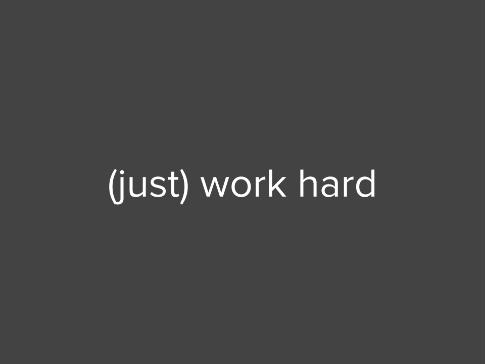Ok, great. So now I know what to do if I want to obtain talent or superpowers. I just need to work hard. Right!
So I work and work, spend days and nights working, learning, practicing and I notice that my performance is improving. Exciting! But at some point I get tired of working, learning and practicing. This is when things that I used to love, things I was passionate about are becoming a burden that is not allowing me to sleep, breath, or live. That's not fun. What's worse, this then feeds the inner voice telling me that I am just not good enough. This superpower bullshit is not for me. I was not born with the talent, so why work this hard.
I've been here many times. I recovered, tried again, got a bit better, then burned out. Again and again and again. At one point I finally realized that maybe I was doing something wrong. And I came to the conclusion that even though I was living in this body that my mind controls, I had very little control over my mind. And if I wanted to stop the improve-burnout cycle I needed to go back to the very essence of being, and take over the control of my mind. This is when by a chance I found meditation and mindfulness as an option that looked worthy exploring. There might be other ways to achieve the same. This is the one that seems to be working for me, so I want to share it with you.

I know what most of you are thinking now. Meditation? You mean like those bald monks that walk barefoot and chant all day long? That's crazy talk. It's for hippies or people out of touch with reality. That can't be for me. I was thinking the same for years until I came across two things that changed my mind.
At Google, I kept on coming across references to mindfulness. But the Google culture is amazing, in that it encourages employees to do almost anything they think is great as long as they are not causing harm. So just because a bunch of Googlers are enthusiastic about something, it doesn't mean much.
When I looked into what this mindfulness hype is all about, it quickly became apparent that this had long passed the threshold of just being a volunteer run effort at Google. Surprisingly, it had nothing to do with my mental image of bald barefoot monks standing on one leg and humming. There were teams building up curriculums, running training courses, organizing grouped meditations and more, all in a very secular but inclusive way. Obviously this thing was very important to a large group of people at Google.
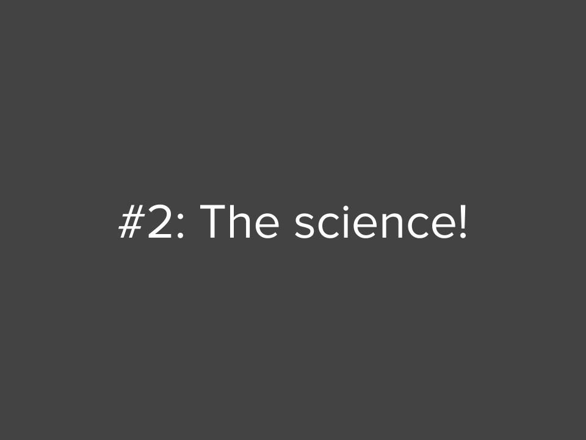More importantly, this movement was based on science rather than enthusiasm, opinions or even religious beliefs. There are many respectable studies from major universities that scientifically prove the effectiveness of mental exercises.
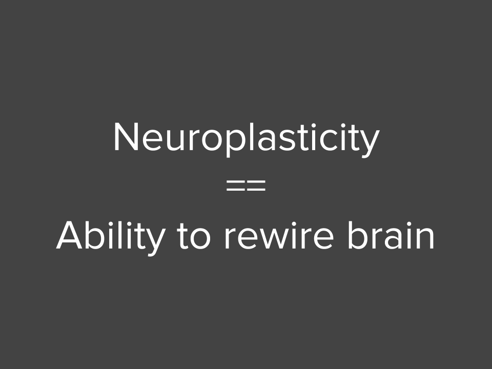One study, that connected the dots for me, was a study done on neuroplasticity and how regular mental exercises can change the physical structure of our brains - basically rewire our brains - so they are more suitable at certain tasks. This sounds a lot like acquiring superpower late in life. I got curious.
I learned that brain's circuitry evolved in several stages which resulted in the responsibilities within our brain being split into several parts, two of which are more important than others for the purposes of this talk.
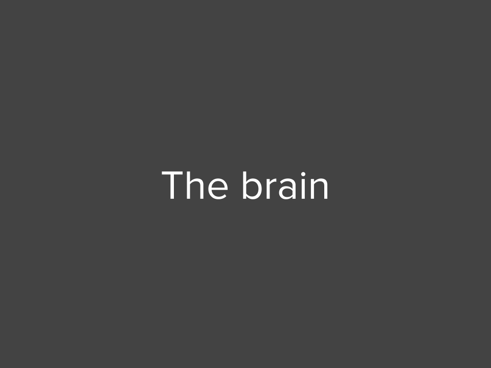Survival increasing split-second decisions happen in a relatively primitive part of the brain called the Amygdala. While higher level reasoning, that require more processing power, happens in the Prefrontal Cortex.
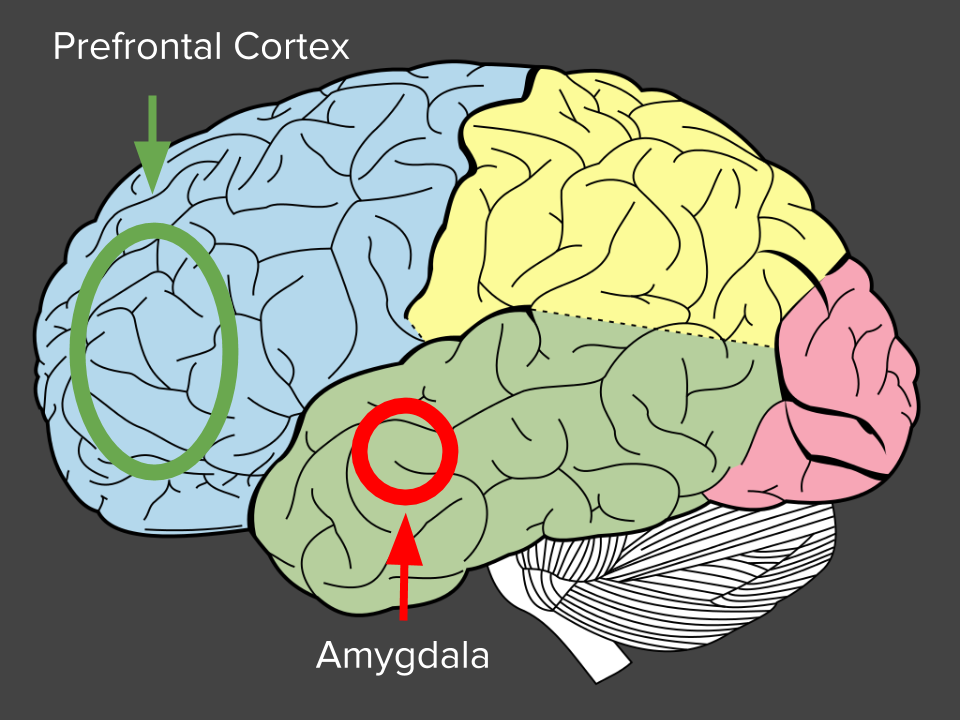A long time ago, it was not very useful to be able to admire the pattern of tiger's coat, when running away or fighting back was necessary in order to increase survival chances. This is why the more primitive Amygdala had higher priority over Prefrontal cortex.
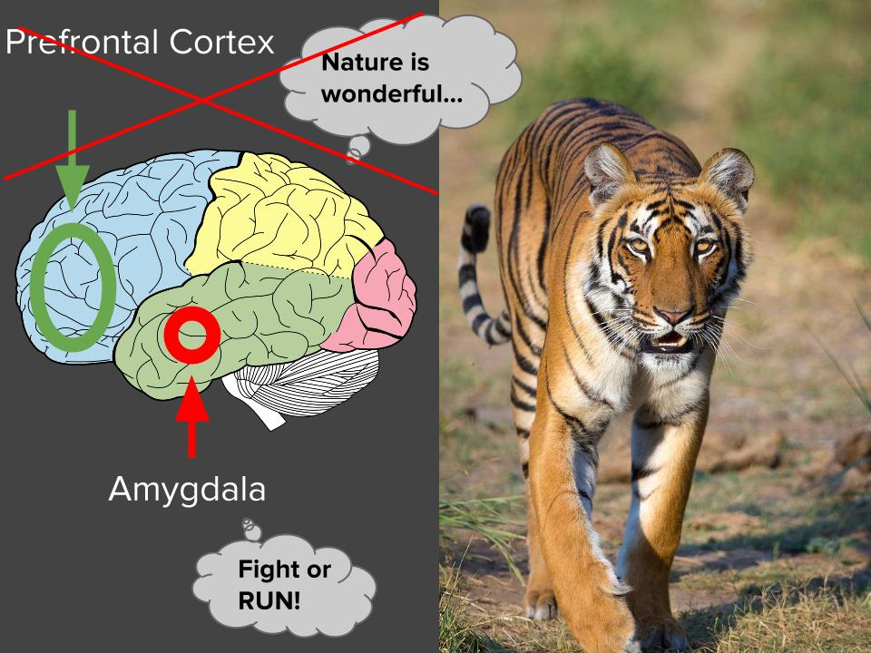In today’s world our brains are much more developed than the brains of our early predecessors. However, one thing we share is the priority order between these brain regions. While we still experience threats, they are from coworkers with conflicting goals, drivers cutting us off in traffic, or coffee that spilled and made us late for the meeting. For dealing with these kinds of threats, the primitive wiring that determines the "fight or flight" response to the trigger gets in the way more often than not.
When I combined what I learned about how human brain works, with the discovery of neuroplasticity and a concrete way of training and rewiring my brain via mediation, I started a very interesting and enlightening journey. Meditation went from being something I considered to be a bizarre practice for hippies, to something that was significantly enhancing my life.
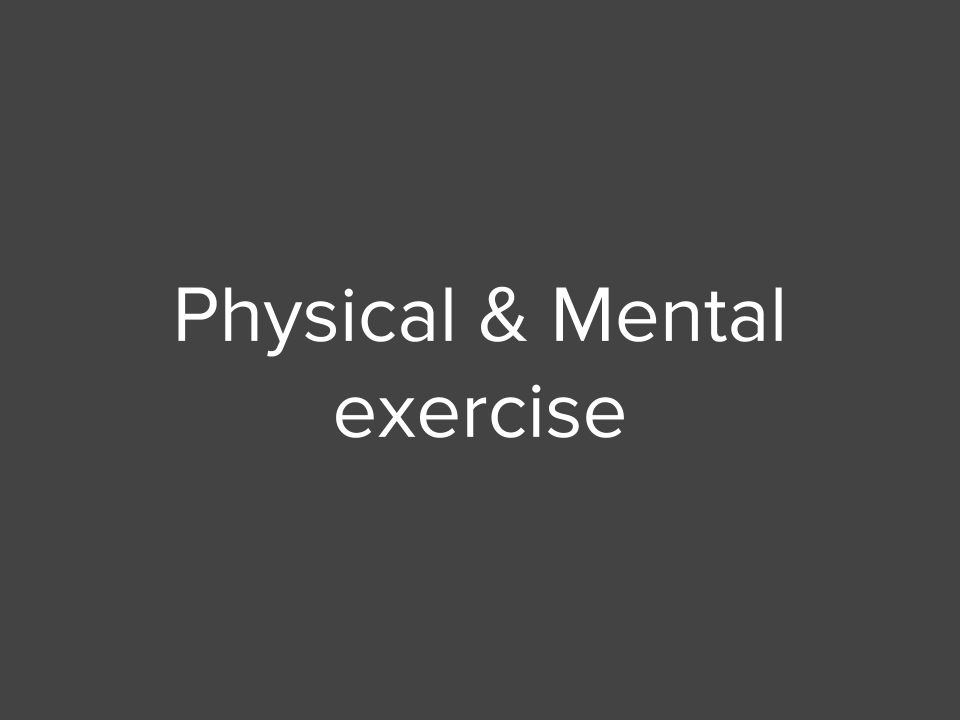I've always considered physical exercise to be important part of my life, but I never thought that mental exercise, even just a few minutes per day, could be just as if not more important. That is until I read more about mindfulness and how at its very core it is just about paying attention to the here and now, on purpose and in a non-judgemental way.
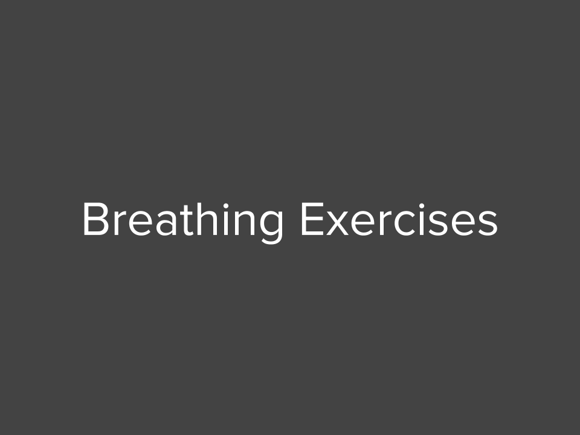I know, that sounds suspicious already. But when I learned about some of the exercises, I found that the most basic ones are primarily about focusing on one's breath as a way to train attention and awareness. We breathe every day, all the time, from the day we are born without thinking about it much. So how much trouble it can be to just pay attention to the breath I thought. Then I tried the exercise.
This is the part of the talk I tried hard to avoid, but then decided that it needs to be included. I'd like to ask you, to take 30 seconds away from this busy day, to just to sit here quietly and breath. If this doesn't sound comfortable to you, you don't have to participate — you can for example hold your breath for 30 seconds instead — but please try to avoid distracting people around you.
During these 30 seconds. All I want you to do is to breath like you normally do, and just observe your body taking the air in and pushing it out. Without trying to change anything, just observe, feel and experience how this simple process works and focus your attention on the rhythm of your breath and any physical sensations that come with it.
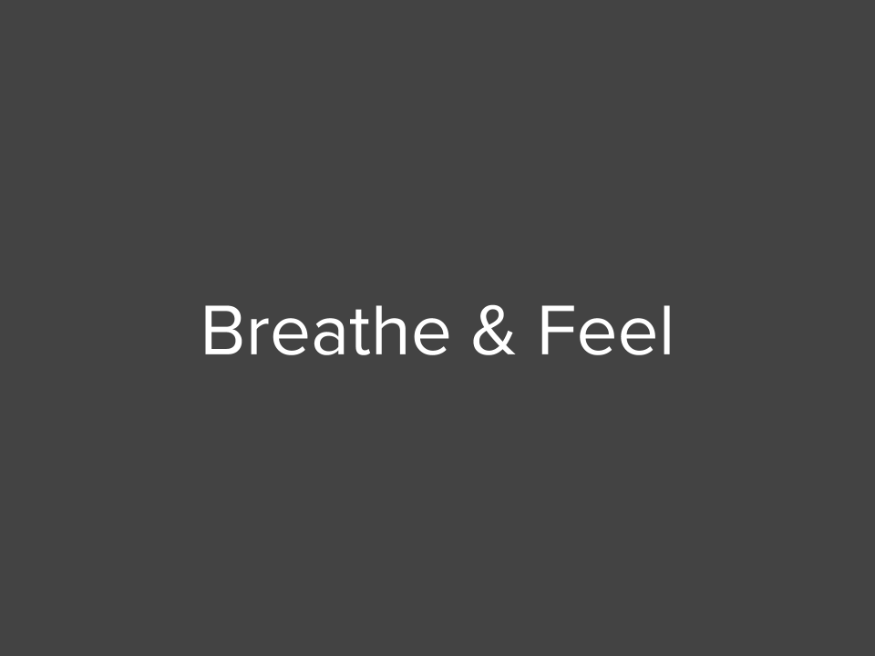30 seconds later...
How was it? Was it easy? Or hard? Were you able to focus only on your breath for the whole 30 seconds? Or did you get distracted by your thoughts? Thoughts about this conference, your job, your family, or me running you through this weird exercise?
Before I tried this for the first time, I thought how hard can it be? Easy peasy lemon squeezy, as my daughter likes to say! But when I actually tried it, after one minute I realized that long ago I stopped paying attention and got distracted by a thought, then another and another and only then I realized hey, I'm supposed to be focusing on breathing, when did I stop? If I was lucky enough I was able to backtrace the weird train of thoughts back to the point where I stopped paying attention.
If you had the same experience then at least now you know that you are not alone. This experience is often referred to as the “Monkey Mind” since our thoughts jump around just like a monkey.
It was this simple exercise that showed me just how little control I had over myself and if I had any hopes of acquiring some talent or superpowers in the near future, that had to change.
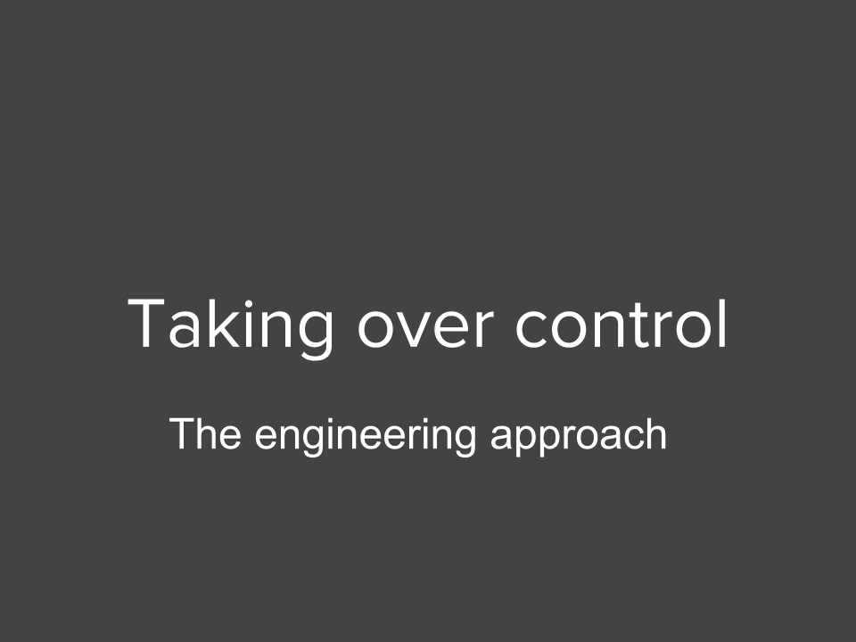Most of us here are engineers. We know how to write code to control computers, we also know how to diagnose and debug code that doesn't work well. So here is my question for you:
Isn't our body really just a sophisticated computer? And our mind just a sophisticated code controlling this computer? I know that this is a stretch, but if you squint hard enough, you can view it that way. At least that's what I see.
When digging more into mindfulness and exercises related to it, I had this revelation. All this stuff is similar to what I do (or try to do) every day at work, but rather than applying my work related techniques and processes only to code, I could be also applying them to my mind.
Let me give you two concrete examples. There are several important skills you train via these mental exercises. Two of the basic ones are self-awareness and self-regulation.
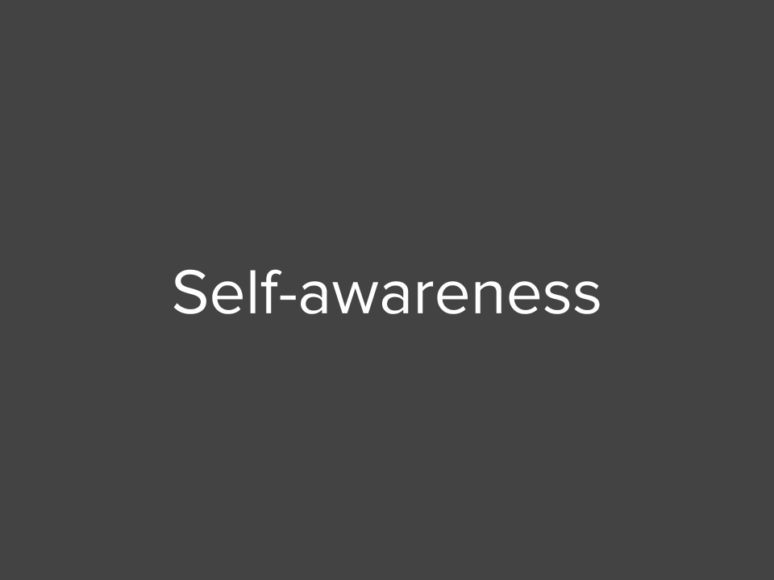Self-awareness is all about being aware what your body and mind is up to. There are many signals that are body and mind generate, but we usually tune them out by default.
What do we do when we want to know more about our application? We start logging and inspecting the logs - why couldn't we do the same with your mind and body? Just observe what's going on, observe the signals and inspect what you see, feel and think.
What do we do if we come across performance issues? We start profiling! - well if your work or non-work performance drops, you can profile how you spend your time, identify the bottlenecks and then can devise a strategy to deal with them.
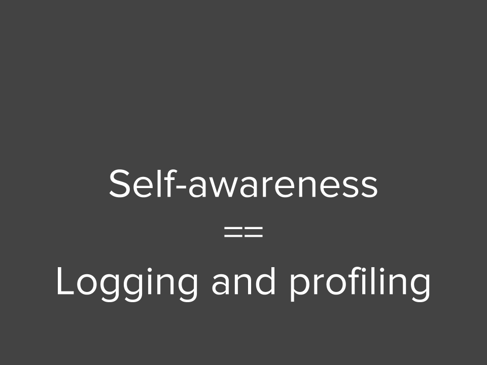Self-awareness is the skill that enables us to do logging and profiling for our mind. With this skill we build out a great monitoring framework for our mind.
But it's no good to know about issues if we don't do anything about them. This is where self-regulation comes into play.
Let’s say that you have a bad temper and find yourself regretting some of your actions and wishing you could change. With self-awareness you first notice that you’re getting upset, you can feel yourself tensing up, getting hotter, etc. With self-regulation you take action on your observations and make a conscious decision to walk away and not do something you would regret.
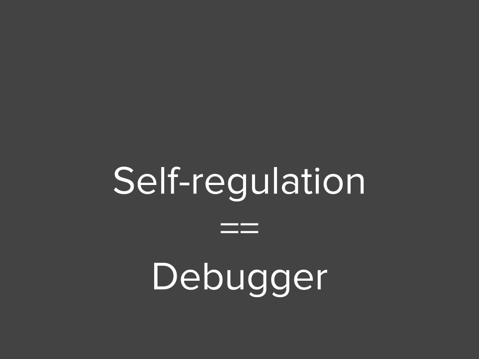Doesn't this sound like using a debugger, breaking on a line, patching the code and resuming?
Or maybe you are someone who isn't great at public speaking, like me. Self-awareness can help you notice that you are pacing on the stage, or speaking too fast. Self-regulation can help you calm down and improve. I still have a ton of work to do to improve, but it's cool that at least I'm aware of when I'm doing this and that's the first step.
And this ties us back into meditation and mindfulness. By actively training your mind, you can more easily become aware of yourself in different situations in life and regulate yourself more effectively. If you practice coding a lot you get good at it. Likewise, if you train your mind you get good at it as well and with these skills you can then unlock your potential to gain other superpowers, or talents.
I shared this story with you because I'm hoping that it can help someone like me from the past. If you are interested in learning more, you can check out the Search Inside Yourself book, which is based on a training curriculum developed at Google. For more practical experience, you can check out headspace.com, a mobile app with excellent guided meditations.
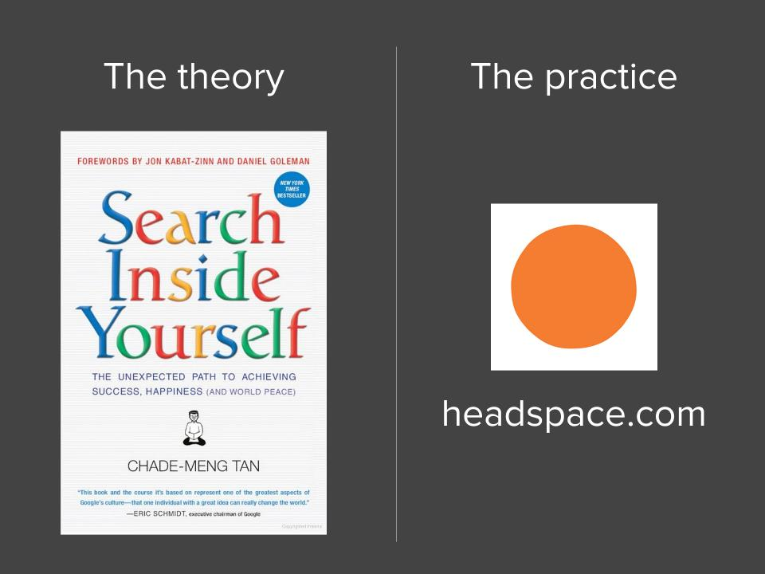I've only scratched the surface of what mindfulness is about. What I love about mindfulness the most is that at its very core it guides me to being kind. And kindness is the most important superpower of all.
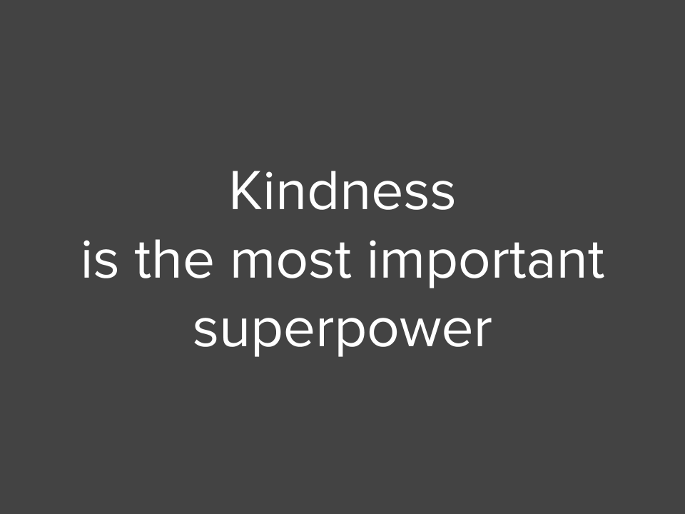 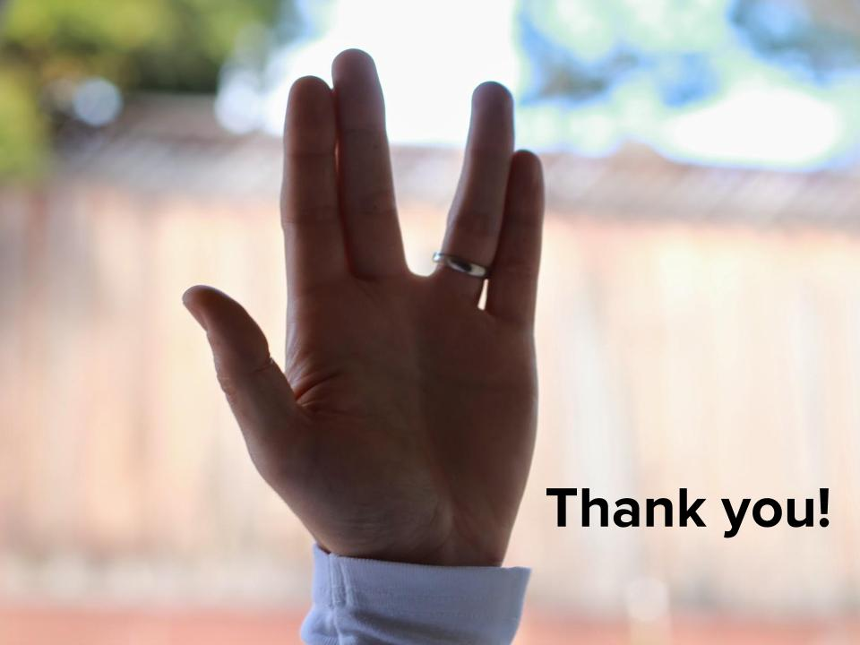The video recording of this talk can be found on YouTube. You can check out the original slides as Google Slides. And the source code for this site is on GitHub
Huge thank you to the people that provided me feedback on the early versions of this talk, especially Dan Wahlin, Merrick Christensen, Brad Green, Naomi Black, Jeremy Elbourn, Paul Santagata, and Mario Galarreta.